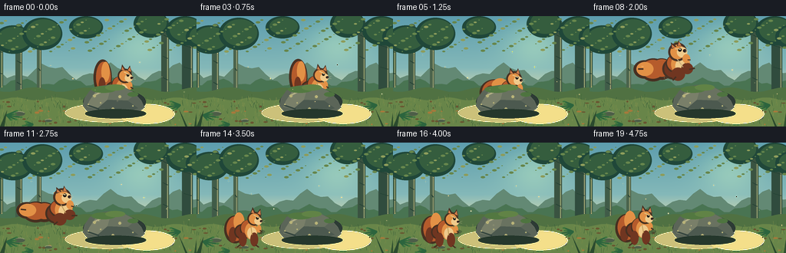
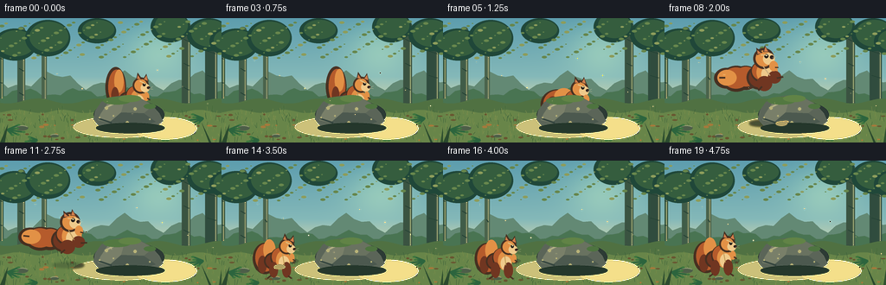
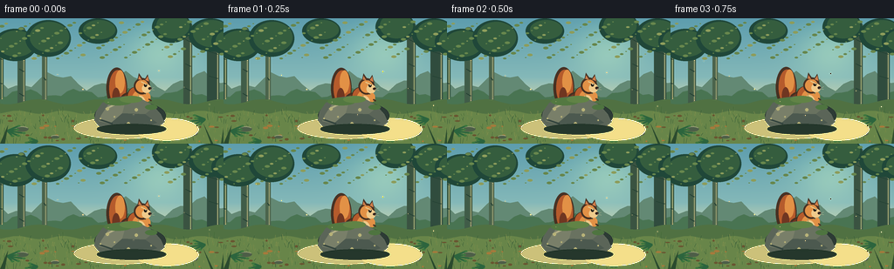

CODING AGENTS AS PIXEL WORLD MODELS
traex/DeepSeek-V4.1-Flash · dynamic_spatial_relationship_0023
点击播放 · 原生 RGB 像素
逐轮保存的候选
回放视频、检查图与代码变化。
每份候选均可单独播放。实际图片检查记录在下方工具轨迹中。
候选 01播放与检查图
点击播放 · 原生 RGB 像素

展开代码变化
--- 上一保存版本
+++ 本次保存版本
@@ -0,0 +1,444 @@
+"""Generate a short forest scene: a squirrel moves from behind a rock to its left."""
+
+from __future__ import annotations
+
+import math
+from pathlib import Path
+
+import numpy as np
+from PIL import Image, ImageDraw, ImageFilter
+
+import artifact_io
+
+
+CASE_DIR = Path(__file__).resolve().parent
+WIDTH = 256
+HEIGHT = 144
+FRAMES = 20
+FPS = 4.0
+SS = 4 # Supersampling factor for clean illustrated edges.
+
+
+def rgba(color):
+ return tuple(int(v) for v in color)
+
+
+def mix(a, b, t):
+ return tuple(round(a[i] * (1.0 - t) + b[i] * t) for i in range(3))
+
+
+def make_background():
+ """Build the static woodland set at supersampled resolution."""
+ w, h = WIDTH * SS, HEIGHT * SS
+ y = np.linspace(0.0, 1.0, h, dtype=np.float32)[:, None]
+ x = np.linspace(0.0, 1.0, w, dtype=np.float32)[None, :]
+
+ # Warm dawn sky with a pale opening above the clearing.
+ top = np.array([93, 157, 174], dtype=np.float32)
+ mid = np.array([153, 199, 190], dtype=np.float32)
+ low = np.array([223, 215, 167], dtype=np.float32)
+ t = np.broadcast_to(np.clip(y / 0.72, 0, 1), (h, w))
+ sky = top[None, None, :] * (1 - t[..., None]) + mid[None, None, :] * t[..., None]
+ t2 = np.broadcast_to(np.clip((y - 0.47) / 0.30, 0, 1), (h, w))
+ sky = sky * (1 - t2[..., None]) + low[None, None, :] * t2[..., None]
+ glow = np.exp(-(((x - 0.72) / 0.23) ** 2 + ((y - 0.24) / 0.31) ** 2) * 2.2)
+ sky += glow[..., None] * np.array([35, 29, 7], dtype=np.float32)
+ sky = np.clip(sky, 0, 255).astype(np.uint8)
+ im = Image.fromarray(sky, "RGB").convert("RGBA")
+ d = ImageDraw.Draw(im, "RGBA")
+
+ # Distant misty ridges.
+ ridge = [(0, int(75 * SS))]
+ for px in range(0, WIDTH + 9, 9):
+ yy = 72 + 8 * math.sin(px * 0.075) + 4 * math.sin(px * 0.21)
+ ridge.append((px * SS, int(yy * SS)))
+ ridge.extend([(w, int(89 * SS)), (w, h), (0, h)])
+ d.polygon(ridge, fill=(100, 137, 117, 210))
+
+ ridge2 = [(0, int(88 * SS))]
+ for px in range(0, WIDTH + 7, 7):
+ yy = 86 + 4 * math.sin(px * 0.105 + 1.7) + 2 * math.sin(px * 0.29)
+ ridge2.append((px * SS, int(yy * SS)))
+ ridge2.extend([(w, int(101 * SS)), (w, h), (0, h)])
+ d.polygon(ridge2, fill=(74, 116, 82, 235))
+
+ # Layered tree trunks establish depth and frame the action.
+ trees = [
+ (-8, 24, 12, 93, (55, 88, 68), 0.55),
+ (20, 10, 9, 104, (65, 92, 72), 0.65),
+ (48, 20, 6, 96, (75, 99, 76), 0.58),
+ (210, 4, 10, 112, (58, 84, 65), 0.72),
+ (237, 18, 14, 104, (49, 77, 62), 0.82),
+ (259, 2, 11, 112, (62, 88, 66), 0.62),
+ ]
+ for tx, top_y, tw, bottom_y, col, alpha in trees:
+ x0, x1 = int(tx * SS), int((tx + tw) * SS)
+ y0, y1 = int(top_y * SS), int(bottom_y * SS)
+ d.rounded_rectangle((x0, y0, x1, y1), radius=4 * SS,
+ fill=(*col, int(alpha * 255)))
+ # Bark light on the right edge and a few branch shadows.
+ d.line((x1 - 2 * SS, y0 + 8 * SS, x1 - 2 * SS, y1),
+ fill=(126, 138, 99, int(alpha * 80)), width=2 * SS)
+ for by in range(y0 + 20 * SS, y1, 28 * SS):
+ d.line((x0 + 2 * SS, by, x1 - 2 * SS, by + 3 * SS),
+ fill=(35, 63, 51, 90), width=SS)
+
+ # Soft canopy clusters, with tiny sunlit leaf marks.
+ clusters = [
+ (-8, 12, 50, 37), (29, 2, 52, 42), (90, 0, 44, 29),
+ (174, -8, 45, 36), (216, 0, 50, 38), (242, 12, 34, 30),
+ ]
+ for cx, cy, cw, ch in clusters:
+ d.ellipse((cx * SS, cy * SS, (cx + cw) * SS, (cy + ch) * SS),
+ fill=(32, 72, 57, 245))
+ d.ellipse(((cx + 5) * SS, (cy + 2) * SS, (cx + cw - 2) * SS, (cy + ch - 5) * SS),
+ fill=(53, 94, 62, 245))
+ for i in range(120):
+ lx = (i * 47 + 19) % 256
+ ly = 4 + (i * 31 + 11) % 43
+ r = 1 + (i % 3)
+ col = (103, 135, 77, 185) if i % 4 else (142, 157, 92, 180)
+ d.ellipse((lx * SS - r * SS, ly * SS - r * SS // 2,
+ lx * SS + r * SS, ly * SS + r * SS // 2), fill=col)
+
+ # Mossy clearing with a path of warm dappled light.
+ ground = [(0, int(96 * SS))]
+ for px in range(0, WIDTH + 6, 6):
+ yy = 96 + 3 * math.sin(px * 0.09 + 0.8)
+ ground.append((px * SS, int(yy * SS)))
+ ground.extend([(w, int(104 * SS)), (w, h), (0, h)])
+ d.polygon(ground, fill=(80, 113, 66, 255))
+
+ ground2 = [(0, int(108 * SS))]
+ for px in range(0, WIDTH + 5, 5):
+ yy = 108 + 2 * math.sin(px * 0.12 + 2.3)
+ ground2.append((px * SS, int(yy * SS)))
+ ground2.extend([(w, h), (0, h)])
+ d.polygon(ground2, fill=(104, 133, 73, 255))
+
+ # Ground texture: grass blades, leaf litter, and softly lit patches.
+ rng = np.random.default_rng(23)
+ for _ in range(330):
+ gx = float(rng.uniform(0, WIDTH))
+ gy = float(rng.uniform(108, HEIGHT + 2))
+ length = float(rng.uniform(2.0, 7.0)) * SS
+ lean = float(rng.uniform(-2.0, 2.0)) * SS
+ color = [(54, 91, 56), (67, 105, 56), (128, 143, 75), (145, 151, 82)][_ % 4]
+ d.line((gx * SS, gy * SS, gx * SS + lean, gy * SS - length),
+ fill=(*color, 180), width=max(1, SS // 2))
+ for _ in range(75):
+ lx = float(rng.uniform(3, 253))
+ ly = float(rng.uniform(111, 142))
+ rx = float(rng.uniform(1.0, 3.5)) * SS
+ ry = float(rng.uniform(0.5, 1.5)) * SS
+ color = (105, 87, 49, 170) if _ % 3 else (164, 122, 61, 160)
+ d.ellipse((lx * SS - rx, ly * SS - ry, lx * SS + rx, ly * SS + ry), fill=color)
+
+ # Small stones and ferns.
+ stones = [(25, 127, 15, 6), (218, 132, 17, 7), (198, 120, 8, 4),
+ (102, 130, 7, 3), (63, 136, 10, 4)]
+ for sx, sy, sw, sh in stones:
+ d.ellipse(((sx - sw / 2) * SS, (sy - sh / 2) * SS,
+ (sx + sw / 2) * SS, (sy + sh / 2) * SS),
+ fill=(78, 94, 72, 230))
+ d.arc(((sx - sw / 2) * SS, (sy - sh / 2) * SS,
+ (sx + sw / 2) * SS, (sy + sh / 2) * SS),
+ 195, 335, fill=(153, 161, 119, 190), width=SS)
+
+ for fx, fy, scale, flip in [(8, 129, 1.0, 1), (235, 116, 0.9, -1),
+ (184, 137, 0.75, 1), (43, 141, 0.65, -1)]:
+ for j, angle in enumerate((-58, -36, -14, 10, 32)):
+ length = (12 + (j % 3) * 4) * scale
+ ex = fx + flip * length * math.cos(math.radians(angle))
+ ey = fy - length * math.sin(math.radians(angle)) * 0.62
+ d.line((fx * SS, fy * SS, ex * SS, ey * SS),
+ fill=(45, 101, 62, 235), width=2 * SS)
+ d.ellipse((ex * SS - 2 * SS, ey * SS - SS,
+ ex * SS + 2 * SS, ey * SS + SS),
+ fill=(63, 119, 63, 220))
+
+ # Dappled sunlight pools keep the clearing readable.
+ d.ellipse((84 * SS, 113 * SS, 196 * SS, 139 * SS),
+ fill=(205, 198, 118, 25))
+ d.ellipse((154 * SS, 114 * SS, 228 * SS, 141 * SS),
+ fill=(244, 218, 136, 24))
+
+ return im
+
+
+def draw_rock(draw: ImageDraw.ImageDraw):
+ """Central granite boulder, roughly 78 px wide and 50 px tall."""
+ # Deep shadow and rear moss cap.
+ draw.ellipse((108 * SS, 95 * SS, 190 * SS, 128 * SS), fill=(45, 59, 53, 125))
+ rock = [
+ (108, 117), (110, 107), (117, 97), (130, 91), (145, 89),
+ (161, 92), (174, 99), (184, 110), (188, 119), (180, 125),
+ (160, 128), (133, 128), (115, 125),
+ ]
+ pts = [(x * SS, y * SS) for x, y in rock]
+ draw.polygon(pts, fill=(91, 101, 88, 255))
+
+ # Faceted planes and highlights.
+ draw.polygon([(116 * SS, 111 * SS), (126 * SS, 96 * SS),
+ (145 * SS, 91 * SS), (140 * SS, 109 * SS),
+ (126 * SS, 121 * SS), (113 * SS, 118 * SS)],
+ fill=(121, 127, 105, 255))
+ draw.polygon([(145 * SS, 91 * SS), (162 * SS, 93 * SS),
+ (177 * SS, 101 * SS), (166 * SS, 110 * SS),
+ (146 * SS, 112 * SS), (140 * SS, 109 * SS)],
+ fill=(105, 114, 96, 255))
+ draw.polygon([(140 * SS, 109 * SS), (166 * SS, 110 * SS),
+ (180 * SS, 120 * SS), (162 * SS, 126 * SS),
+ (131 * SS, 126 * SS), (126 * SS, 121 * SS)],
+ fill=(76, 89, 79, 255))
+ draw.line([(121 * SS, 104 * SS), (137 * SS, 96 * SS), (150 * SS, 95 * SS)],
+ fill=(178, 175, 133, 210), width=2 * SS)
+ draw.line([(114 * SS, 116 * SS), (129 * SS, 121 * SS)],
+ fill=(54, 70, 64, 200), width=2 * SS)
+
+ # Moss patches and little lichen speckles.
+ draw.ellipse((119 * SS, 91 * SS, 151 * SS, 100 * SS), fill=(83, 121, 66, 245))
+ draw.ellipse((137 * SS, 89 * SS, 163 * SS, 97 * SS), fill=(98, 132, 70, 240))
+ draw.ellipse((166 * SS, 99 * SS, 180 * SS, 105 * SS), fill=(79, 116, 64, 210))
+ for lx, ly, r in [(123, 104, 2), (131, 113, 1), (156, 105, 2),
+ (173, 117, 1), (147, 121, 2), (115, 115, 1)]:
+ draw.ellipse(((lx - r) * SS, (ly - r) * SS,
+ (lx + r) * SS, (ly + r) * SS),
+ fill=(183, 178, 120, 150))
+
+ # Dark contact shadow anchors the rock.
+ draw.ellipse((111 * SS, 121 * SS, 190 * SS, 133 * SS),
+ fill=(36, 55, 44, 110))
+
+
+def squirrel_pose(kind: str, phase: float):
+ """Return pose parameters for the squirrel in pixel coordinates."""
+ if kind == "peek":
+ return {
+ "x": 155 + 1.2 * math.sin(phase * math.pi * 2),
+ "y": 87 + 0.6 * math.sin(phase * math.pi * 2 + 0.4),
+ "angle": -2.0,
+ "body": (20, 25),
+ "tail": "up",
+ "legs": "crouch",
+ "ear_twitch": 0.5 * math.sin(phase * math.pi * 4),
+ }
+ if kind == "crouch":
+ return {
+ "x": 151, "y": 92, "angle": -8, "body": (21, 23),
+ "tail": "coil", "legs": "crouch", "ear_twitch": 0.0,
+ }
+ if kind == "jump":
+ # A broad leftward arc clears the top of the rock.
+ t = min(1.0, max(0.0, phase))
+ x = 147 - 82 * t
+ y = 86 - 34 * math.sin(math.pi * t) + 13 * t
+ return {
+ "x": x, "y": y, "angle": -15 - 13 * math.sin(math.pi * t),
+ "body": (24, 17), "tail": "stream", "legs": "tuck",
+ "ear_twitch": 1.0 * math.sin(math.pi * t),
+ }
+ # Landing and final seated pose.
+ t = min(1.0, max(0.0, phase))
+ return {
+ "x": 65 + 3 * math.sin(phase * math.pi),
+ "y": 106 + 3 * math.sin(phase * math.pi),
+ "angle": -2 + 3 * math.sin(phase * math.pi),
+ "body": (22, 24), "tail": "settle", "legs": "stand",
+ "ear_twitch": 0.7 * math.sin(phase * math.pi * 2),
+ }
+
+
+def draw_squirrel(base: Image.Image, pose: dict, shadow: bool = True):
+ """Draw a readable red squirrel on a transparent layer."""
+ layer = Image.new("RGBA", base.size, (0, 0, 0, 0))
+ d = ImageDraw.Draw(layer, "RGBA")
+ x, y = pose["x"], pose["y"]
+ bw, bh = pose["body"]
+ angle = math.radians(pose["angle"])
+
+ def p(px, py):
+ ca, sa = math.cos(angle), math.sin(angle)
+ return ((x + px * ca - py * sa) * SS, (y + px * sa + py * ca) * SS)
+
+ def ell(cx, cy, rx, ry, fill):
+ ca, sa = math.cos(angle), math.sin(angle)
+ # Draw an ellipse in local coordinates by rendering to a temporary shape.
+ bounds = []
+ for ox, oy in [(-rx, -ry), (rx, -ry), (rx, ry), (-rx, ry)]:
+ bounds.append(p(cx + ox, cy + oy))
+ xs, ys = zip(*bounds)
+ d.ellipse((min(xs), min(ys), max(xs), max(ys)), fill=fill)
+
+ def line(points, fill, width):
+ d.line([p(px, py) for px, py in points], fill=fill, width=max(1, int(width * SS)))
+
+ fur = (181, 91, 44, 255)
+ fur_dark = (112, 54, 33, 255)
+ fur_light = (226, 145, 70, 255)
+ cream = (239, 202, 139, 255)
+ outline = (70, 45, 31, 245)
+
+ if shadow:
+ sx, sy = x + 2, 116
+ d.ellipse(((sx - 20) * SS, (sy - 4) * SS,
+ (sx + 20) * SS, (sy + 4) * SS), fill=(39, 53, 39, 90))
+
+ # Tail behind the body. Its silhouette is the key recognizability cue.
+ tail = pose["tail"]
+ if tail == "up":
+ ell(-21, -8, 11, 23, outline)
+ ell(-20, -8, 9, 20, fur)
+ ell(-17, -15, 5, 13, fur_light)
+ ell(-22, 2, 4, 10, fur_dark)
+ elif tail == "coil":
+ ell(-20, 5, 17, 15, outline)
+ ell(-19, 4, 15, 13, fur)
+ ell(-11, -3, 10, 8, fur_light)
+ ell(-25, 5, 6, 9, fur_dark)
+ elif tail == "stream":
+ # Long, wind-swept tail extending right, away from travel direction.
+ ell(-21, 1, 13, 9, outline)
+ ell(-31, -3, 15, 9, outline)
+ ell(-41, -9, 12, 7, outline)
+ ell(-20, 0, 11, 7, fur)
+ ell(-31, -4, 13, 7, fur)
+ ell(-40, -9, 10, 5, fur_light)
+ line([(-42, -10), (-48, -13)], outline, 2)
+ else:
+ ell(-17, 5, 14, 18, outline)
+ ell(-16, 4, 12, 16, fur)
+ ell(-12, -5, 7, 12, fur_light)
+ ell(-20, 12, 5, 10, fur_dark)
+
+ # Haunch, torso, chest, and head.
+ ell(-7, 8, 11, 10, outline)
+ ell(-7, 8, 9, 8, fur_dark)
+ ell(0, 4, bw * 0.48, bh * 0.48, outline)
+ ell(0, 3, bw * 0.42, bh * 0.42, fur)
+ ell(4, 7, 8, 11, fur_light)
+ ell(5, 10, 6, 8, cream)
+ ell(8, -9, 9, 9, outline)
+ ell(8, -9, 7, 7, fur_light)
+ ell(13, -6, 5, 5, cream)
+
+ # Pointed ears, eye, nose, whiskers.
+ twitch = pose.get("ear_twitch", 0.0)
+ ear1 = [(3, -16), (5 + twitch, -24), (10, -16)]
+ ear2 = [(11, -16), (15 + twitch, -22), (17, -13)]
+ d.polygon([p(px, py) for px, py in ear1], fill=outline)
+ d.polygon([p(px, py) for px, py in ear2], fill=outline)
+ d.polygon([p(px, py) for px, py in [(4, -17), (5 + twitch, -21), (8, -16)]],
+ fill=(209, 126, 75, 255))
+ d.polygon([p(px, py) for px, py in [(12, -16), (15 + twitch, -20), (16, -14)]],
+ fill=(209, 126, 75, 255))
+ ell(12, -10, 1.7, 1.9, (33, 29, 24, 255))
+ ell(12.5, -10.7, 0.6, 0.6, (246, 237, 197, 255))
+ ell(17, -6, 1.8, 1.4, (45, 31, 27, 255))
+ line([(17, -5), (22, -7)], (239, 217, 166, 200), 0.45)
+ line([(17, -5), (22, -4)], (239, 217, 166, 200), 0.45)
+
+ # Legs and feet depend on the action.
+ if pose["legs"] == "tuck":
+ ell(-5, 17, 7, 6, fur_dark)
+ ell(9, 16, 6, 5, fur_dark)
+ line([(-9, 19), (-15, 21)], outline, 2)
+ line([(11, 18), (18, 20)], outline, 2)
+ elif pose["legs"] == "crouch":
+ ell(-5, 17, 8, 5, fur_dark)
+ ell(7, 17, 7, 5, fur_dark)
+ line([(-9, 20), (-15, 22)], outline, 2)
+ line([(11, 19), (17, 21)], outline, 2)
+ else:
+ ell(-7, 18, 5, 9, fur_dark)
+ ell(8, 18, 5, 9, fur_dark)
+ line([(-10, 25), (-14, 28)], outline, 2)
+ line([(10, 25), (14, 28)], outline, 2)
+
+ # Forepaws held near the chest.
+ ell(14, 4, 3, 5, fur_light)
+ line([(15, 6), (18, 8)], outline, 1.5)
+
+ # A small rim light from the upper right.
+ line([(7, -14), (13, -11)], (255, 210, 139, 210), 1.3)
+ line([(3, -1), (5, 12)], (239, 166, 92, 160), 1.2)
+ base.alpha_composite(layer)
+
+
+def add_foreground_details(im: Image.Image, frame_index: int):
+ """Static foreground framing and gentle ambient motion."""
+ d = ImageDraw.Draw(im, "RGBA")
+ # Foreground grass silhouettes.
+ for gx, gy, lean, height, col in [
+ (0, 144, 9, 21, (44, 75, 47)), (9, 144, -5, 16, (48, 82, 50)),
+ (244, 144, -11, 23, (43, 74, 46)), (253, 144, 3, 19, (48, 80, 48)),
+ ]:
+ d.polygon([(gx * SS, gy * SS), ((gx + lean) * SS, (gy - height) * SS),
+ ((gx + lean * 0.4 + 2) * SS, gy * SS)], fill=(*col, 245))
+
+ # A few drifting motes make the 5-second shot feel alive without distraction.
+ phase = frame_index / FRAMES
+ for i in range(8):
+ mx = (33 + i * 29 + frame_index * (0.35 + i * 0.03)) % 248 + 4
+ my = 45 + (i * 17 + frame_index * 0.55 + 3 * math.sin(phase * 6 + i)) % 67
+ radius = 0.45 + (i % 3) * 0.25
+ alpha = 65 + 25 * math.sin(phase * math.pi * 2 + i)
+ d.ellipse(((mx - radius) * SS, (my - radius) * SS,
+ (mx + radius) * SS, (my + radius) * SS),
+ fill=(248, 224, 154, int(max(20, alpha))))
+ return im
+
+
+def squirrel_state(frame: int):
+ """Action timing: peek, anticipate, leap, land, then settle."""
+ if frame <= 4:
+ return "peek", frame / 4.0
+ if frame == 5:
+ return "crouch", 0.0
+ if frame <= 12:
+ return "jump", (frame - 5) / 7.0
+ return "settle", (frame - 12) / 7.0
+
+
+def render_frame(background: Image.Image, frame: int):
+ state, phase = squirrel_state(frame)
+ im = background.copy()
+
+ if state in ("peek", "crouch"):
+ # The boulder is in front of the squirrel, hiding its lower body.
+ pose = squirrel_pose(state, phase)
+ draw_squirrel(im, pose, shadow=False)
+ draw_rock(ImageDraw.Draw(im, "RGBA"))
+ elif state == "jump":
+ pose = squirrel_pose(state, phase)
+ # Above the rock, the whole airborne silhouette is visible.
+ if pose["y"] < 84:
+ draw_rock(ImageDraw.Draw(im, "RGBA"))
+ draw_squirrel(im, pose, shadow=False)
+ else:
+ # Rising behind the rock, then descending in front as it lands left.
+ draw_squirrel(im, pose, shadow=False)
+ draw_rock(ImageDraw.Draw(im, "RGBA"))
+ else:
+ draw_rock(ImageDraw.Draw(im, "RGBA"))
+ pose = squirrel_pose(state, phase)
+ draw_squirrel(im, pose, shadow=True)
+
+ im = add_foreground_details(im, frame)
+ return im
+
+
+def main():
+ background = make_background()
+ frames = []
+ for index in range(FRAMES):
+ frame = render_frame(background, index)
+ # A restrained bloom on the brightest woodland light keeps it cohesive.
+ small = frame.resize((WIDTH, HEIGHT), Image.Resampling.LANCZOS)
+ frames.append(np.asarray(small.convert("RGB"), dtype=np.uint8))
+ artifact_io.save(frames, CASE_DIR)
+ print(f"Wrote {FRAMES} frames and player artifacts to {CASE_DIR}")
+
+
+if __name__ == "__main__":
+ main()
候选 02播放与检查图
点击播放 · 原生 RGB 像素


展开代码变化
--- 上一保存版本
+++ 本次保存版本
@@ -3,6 +3,7 @@
from __future__ import annotations
import math
+import subprocess
from pathlib import Path
import numpy as np
@@ -44,7 +45,7 @@
glow = np.exp(-(((x - 0.72) / 0.23) ** 2 + ((y - 0.24) / 0.31) ** 2) * 2.2)
sky += glow[..., None] * np.array([35, 29, 7], dtype=np.float32)
sky = np.clip(sky, 0, 255).astype(np.uint8)
- im = Image.fromarray(sky, "RGB").convert("RGBA")
+ im = Image.fromarray(sky).convert("RGBA")
d = ImageDraw.Draw(im, "RGBA")
# Distant misty ridges.
@@ -389,6 +390,25 @@
return im
+def add_action_dust(im: Image.Image, frame: int):
+ """Small ground puffs at takeoff and landing, plus an airborne shadow."""
+ d = ImageDraw.Draw(im, "RGBA")
+ puffs = []
+ if 6 <= frame <= 8:
+ age = frame - 6
+ puffs = [(141 - age * 3, 122, 3 + age * 2, 92 - age * 22),
+ (148 - age * 4, 120, 2 + age, 76 - age * 18)]
+ elif 12 <= frame <= 14:
+ age = frame - 12
+ puffs = [(75 - age * 4, 123, 3 + age * 2, 96 - age * 24),
+ (58 + age * 3, 124, 2 + age, 84 - age * 20)]
+ for px, py, radius, alpha in puffs:
+ d.ellipse(((px - radius) * SS, (py - radius * 0.45) * SS,
+ (px + radius) * SS, (py + radius * 0.45) * SS),
+ fill=(177, 161, 99, int(max(20, alpha))))
+ return im
+
+
def squirrel_state(frame: int):
"""Action timing: peek, anticipate, leap, land, then settle."""
if frame <= 4:
@@ -411,6 +431,17 @@
draw_rock(ImageDraw.Draw(im, "RGBA"))
elif state == "jump":
pose = squirrel_pose(state, phase)
+ # A moving, softened contact shadow makes the arc feel grounded.
+ shadow = Image.new("RGBA", im.size, (0, 0, 0, 0))
+ sd = ImageDraw.Draw(shadow, "RGBA")
+ sx = pose["x"] + 2
+ sy = 121 + max(0.0, (82 - pose["y"]) * 0.04)
+ spread = max(11.0, 18.0 - abs(pose["y"] - 82) * 0.12)
+ sd.ellipse(((sx - spread) * SS, (sy - 3) * SS,
+ (sx + spread) * SS, (sy + 3) * SS),
+ fill=(38, 52, 38, 72))
+ shadow = shadow.filter(ImageFilter.GaussianBlur(1.2 * SS))
+ im.alpha_composite(shadow)
# Above the rock, the whole airborne silhouette is visible.
if pose["y"] < 84:
draw_rock(ImageDraw.Draw(im, "RGBA"))
@@ -424,8 +455,27 @@
pose = squirrel_pose(state, phase)
draw_squirrel(im, pose, shadow=True)
+ im = add_action_dust(im, frame)
im = add_foreground_details(im, frame)
return im
+
+
+def encode_video(frames):
+ """Encode an RGB H.264 preview alongside the canonical frame artifacts."""
+ try:
+ import imageio.v2 as imageio
+
+ imageio.mimsave(
+ CASE_DIR / "video.mp4",
+ list(frames),
+ fps=FPS,
+ codec="libx264",
+ quality=8,
+ macro_block_size=None,
+ )
+ except Exception as exc:
+ # Frame artifacts are canonical; video encoding is a convenience output.
+ print(f"MP4 preview unavailable: {exc}")
def main():
@@ -437,6 +487,7 @@
small = frame.resize((WIDTH, HEIGHT), Image.Resampling.LANCZOS)
frames.append(np.asarray(small.convert("RGB"), dtype=np.uint8))
artifact_io.save(frames, CASE_DIR)
+ encode_video(frames)
print(f"Wrote {FRAMES} frames and player artifacts to {CASE_DIR}")
可观测工具轨迹
实际执行的命令与返回图片。
命令 1exit 0
/bin/bash -lc "pwd && rg --files -g 'prompt.txt' -g 'GENERATION_RULES.md' -g 'task_spec.json' -g '"'!*.mp4'"' -g '"'!*.webm'"'"
命令 2exit 0
/bin/bash -lc 'ls -la'
命令 3exit 0
/bin/bash -lc 'cat prompt.txt'
命令 4exit 0
/bin/bash -lc 'cat GENERATION_RULES.md'
命令 5exit 0
/bin/bash -lc 'cat task_spec.json'
命令 6exit 0
/bin/bash -lc "sed -n '1,240p' artifact_io.py && sed -n '1,220p' player_template.html"
命令 7exit 0
/bin/bash -lc "python - <<'PY'
import PIL, numpy
print('PIL', PIL.__version__, 'numpy', numpy.__version__)
PY"命令 8exit 0
/bin/bash -lc 'command -v chafa || command -v viu || command -v jp2 || command -v img2txt || true'
命令 9exit 0
/bin/bash -lc 'command -v ffmpeg || true'
命令 10exit 1
/bin/bash -lc 'python generate.py'
命令 11exit 0
/bin/bash -lc 'python generate.py'
命令 12exit 0
/bin/bash -lc 'ls -lh frames inspection.png transition_check.png pixels.npz index.html'
命令 13exit 0
/bin/bash -lc 'command -v convert || command -v magick || command -v tesseract || true'
命令 14exit 0
/bin/bash -lc "python - <<'PY'
from PIL import Image
import numpy as np
for p in ['inspection.png','frames/00.png','frames/10.png','frames/19.png']:
im=np.asarray(Image.open(p).convert('RGB'))
print(p, im.shape, 'mean', np.round(im.mean((0,1)),1), 'min/max', im.min(), im.max(), 'unique',len(np.unique(im.reshape(-1,3),axis=0)))
PY"命令 15exit 0
/bin/bash -lc "python - <<'PY'
from PIL import Image
im=Image.open('frames/19.png').convert('RGB').resize((64,36),Image.Resampling.LANCZOS)
for y in range(0,36,2):
for x in range(64):
a=im.getpixel((x,y)); b=im.getpixel((x,min(y+1,35)))
print(f'\\x1b[38;2;{a[0]};{a[1]};{a[2]}m\\x1b[48;2;{b[0]};{b[1]};{b[2]}mâ',end='')
print('\\x1b[0m')
PY"命令 16exit 0
/bin/bash -lc "python - <<'PY'
from PIL import Image
import numpy as np
pal = np.array([
[20,35,30],[55,80,55],[95,125,75],[145,165,100], # dark greens / grass
[35,75,55],[70,110,70],[110,145,115],[170,190,155], # foliage
[70,140,160],[140,190,190],[220,215,165],[250,240,205], # sky/light
[110,55,35],[180,90,45],[225,145,70],[240,205,140], # squirrel browns/creams
[70,85,80],[110,120,105],[160,160,130],[210,205,175], # rock
])
chars = '.:+*abcdefghijklmnopqrstuvwxyz'
# assign concise legend chars
legend='#:;%+*gGbdBsSlyYrRoTtKkQqWw'
for name in ['frames/00.png','frames/05.png','frames/08.png','frames/10.png','frames/12.png','frames/19.png']:
im=np.asarray(Image.open(name).convert('RGB').resize((64,36),Image.Resampling.LANCZOS)).astype(int)
dist=((im[:,:,None,:]-pal[None,None,:,:])**2).sum(-1)
idx=dist.argmin(-1)
print('\\n',name)
for row in idx:
print(''.join(legend[i] for i in row))
PY"命令 17exit 0
/bin/bash -lc "python - <<'PY'
from PIL import Image
for i in [0,5,8,10,12,19]:
im=Image.open(f'frames/{i:02d}.png').crop((20,70,210,135)).resize((760,260),Image.Resampling.NEAREST)
im.save(f'.tmp/detail_{i:02d}.png')
print('saved')
PY"命令 18exit 0
/bin/bash -lc "python - <<'PY'
from PIL import Image
import numpy as np
for i in range(20):
a=np.asarray(Image.open(f'frames/{i:02d}.png').convert('RGB')).astype(int)
# reddish squirrel: R > 1.3*G and G > 1.05*B, brightness > 60
m=(a[:,:,0]>a[:,:,1]*1.25)&(a[:,:,1]>a[:,:,2]*1.05)&(a[:,:,0]>75)
ys,xs=np.where(m)
print(f'{i:02d}: n={len(xs):4d}', end='')
if len(xs): print(f' bbox=({xs.min()},{ys.min()})-({xs.max()},{ys.max()}) centroid=({xs.mean():.1f},{ys.mean():.1f})')
else: print()
PY"命令 19exit 0
/bin/bash -lc "python - <<'PY'
from PIL import Image
import numpy as np
for i in range(20):
a=np.asarray(Image.open(f'frames/{i:02d}.png').convert('RGB')).astype(int)
# tighter object detector focused on red/orange squirrel fur and excluding rock/sky
m=(a[:,:,0]>a[:,:,1]*1.35)&(a[:,:,0]>95)&(a[:,:,2]<a[:,:,1]*0.9)
ys,xs=np.where(m)
if len(xs):
print(f'{i:02d}: n={len(xs):4d} bbox=({xs.min()},{ys.min()})-({xs.max()},{ys.max()})')
else: print(i,0)
PY"命令 20exit 0
/bin/bash -lc "python - <<'PY'
from PIL import Image
import numpy as np
# Print an annotated coarse map of the central action area for representative frames.
for i in [0,5,8,10,12,19]:
im=np.asarray(Image.open(f'frames/{i:02d}.png').convert('RGB'))
print('\\nframe',i)
for y in range(70,132,3):
s=''
for x in range(20,210,3):
r,g,b=im[y,x]
if r>1.35*g and r>95: c='S'
elif 85<r<150 and 85<g<145 and 70<b<125 and abs(r-g)<30: c='R'
elif g>r*1.1: c='.'
else: c=' '
s+=c
print(s)
PY"命令 21exit 0
/bin/bash -lc "python - <<'PY' mods=['cv2','imageio','imageio_ffmpeg','av'] for m in mods: try: x=__import__(m) print(m, getattr(x,'__version__','available')) except Exception as e: print(m, 'missing') PY"
命令 22exit 0
/bin/bash -lc 'mkdir -p .tmp/candidate_01 && cp -a frames pixels.npz index.html inspection.png transition_check.png generate.py .tmp/candidate_01/ && du -sh .tmp/candidate_01'
命令 23exit 0
/bin/bash -lc 'python generate.py'
命令 24exit 0
/bin/bash -lc "ls -lh video.mp4 pixels.npz index.html inspection.png && python - <<'PY'
import av, json, numpy as np
from PIL import Image
with av.open('video.mp4') as c:
s=c.streams.video[0]
print('video', s.codec_context.name, s.width, s.height, s.average_rate, 'frames', sum(1 for _ in c.decode(video=0)))
z=np.load('pixels.npz')['pixels']
print('pixels.npz', z.shape, z.dtype)
for i in range(20):
a=np.asarray(Image.open(f'frames/{i:02d}.png').convert('RGB'))
assert a.shape==(144,256,3)
print('all frames valid')
PY"命令 25exit 0
/bin/bash -lc "python -m py_compile generate.py artifact_io.py && python - <<'PY'
import hashlib, json
from pathlib import Path
p=Path('index.html').read_text()
assert 'const DATA=' in p and 'window.__pixelReady=true' in p
spec=json.loads(Path('task_spec.json').read_text())
assert spec['width']==256 and spec['height']==144 and spec['frames']==20 and spec['fps']==4.0
print('player payload present')
print('artifact_sha256', hashlib.sha256(Path('pixels.npz').read_bytes()).hexdigest()[:16])
PY"命令 26exit 0
/bin/bash -lc "python - <<'PY'
from PIL import Image
import numpy as np
ims=[np.asarray(Image.open(f'frames/{i:02d}.png').convert('RGB'),dtype=np.int16) for i in range(20)]
d=[np.abs(ims[i]-ims[i-1]).mean() for i in range(1,20)]
print('consecutive mean abs diff:', ' '.join(f'{x:.2f}' for x in d))
print('frame range:', min(x.mean() for x in ims), max(x.mean() for x in ims))
print('first/last scene difference:', np.abs(ims[-1]-ims[0]).mean())
PY"命令 27exit 0
/bin/bash -lc 'git status --short 2>/dev/null || true'
命令 28exit 0
/bin/bash -lc "python - <<'PY'
from pathlib import Path
import json, numpy as np
from PIL import Image
spec=json.loads(Path('task_spec.json').read_text())
assert spec=={'task_type':'t2v','width':256,'height':144,'frames':20,'fps':4.0,'audio':None,'benchmark':'vbench2_subset'}
assert Path('generate.py').is_file() and Path('video.mp4').stat().st_size>0
assert Path('index.html').stat().st_size>0 and Path('inspection.png').is_file()
for i in range(20):
p=Path(f'frames/{i:02d}.png')
assert p.is_file()
im=Image.open(p); im.verify()
z=np.load('pixels.npz')['pixels']
assert z.shape==(144,256,20) and z.dtype==np.uint32
print('CONTRACT OK: 20 RGB frames, 256x144, 4 fps, regenerated artifacts present')
PY"保存候选 2 份；完成命令 28 次；可验证图片返回 0 张。原始 API 响应与完整日志保留在本地。